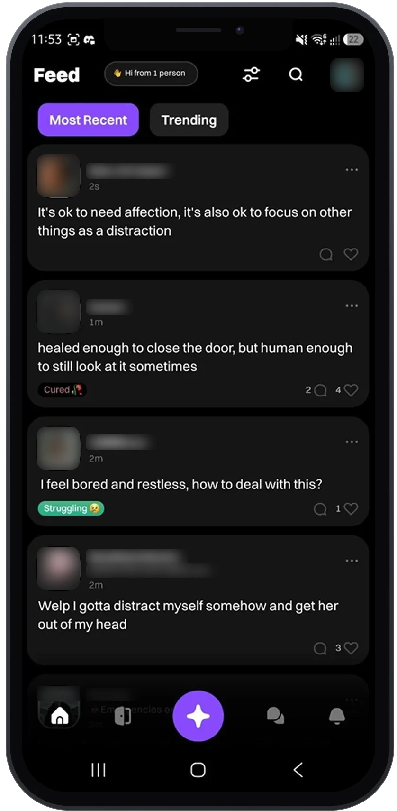

TalkLife
WebsiteAndroidiOS
- Was es ist
- Eine Community zur gegenseitigen Unterstützung: Beiträge, private Nachrichten, Gruppenchats und Antworten rund um die Uhr.
- Stärken
- Ein Ort „ohne Bewertung“; fast immer ist jemand online; starke Werkzeuge für Sicherheit und Moderation.
- Grenzen
- Sagt selbst, dass sie keine professionelle Hilfe ersetzt; keine lokalen Angebote rund um Migration in der Beschreibung; der iOS-Eintrag zeigt nur eine englische Oberfläche.
